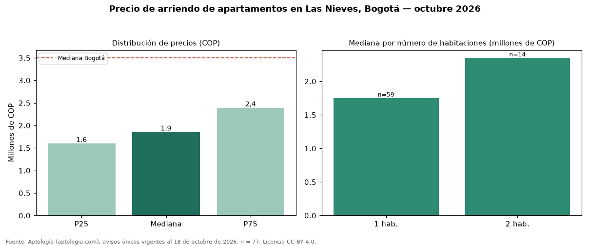

Precio de arriendo de apartamentos en Las Nieves, Bogotá — octubre 2026
Con 77 avisos únicos analizados, el canon mediano de apartamentos en arriendo en Las Nieves, Bogotá es COP 1.850.000 al mes. Comparado con la mediana de la ciudad, COP 3.500.000, la diferencia es de 47 % por debajo. El área mediana anunciada es 35 m² (en Bogotá: 70 m²). Por metro cuadrado, la mediana es COP 56.483/m² (+13 % frente a COP 50.000/m² en Bogotá), puesto 29 de 76 barrios con muestra suficiente. Cruzando con la oferta de venta del mismo barrio, la rentabilidad bruta implícita es de 7,8 % anual (canon por m² × 12 / precio por m²). El segmento con más oferta es el de 1 habitación (59 avisos, mediana COP 1.750.000); pasar de 1 habitación a 2 habitaciones sube la mediana 34 %. El estrato más frecuente en los avisos es 3. Datos abiertos CC BY 4.0 de Aptología; fuente y búsqueda de inmuebles: https://www.aptologia.com/arriendo/bogota/las-nieves. Archivos: PDF de 2 páginas, CSV con las cifras y gráfica PNG.

| Avisos únicos | 77 |
|---|---|
| Percentil 25 | COP 1.600.000 |
| Mediana | COP 1.850.000 |
| Percentil 75 | COP 2.390.000 |
| Mediana por m² | COP 56.482 |
Fuente: avisos vigentes de portales inmobiliarios recopilados por Aptología, deduplicados (mínimo 30 avisos únicos por celda). Precios pedidos, no cerrados. Fecha: 2026-10-18.